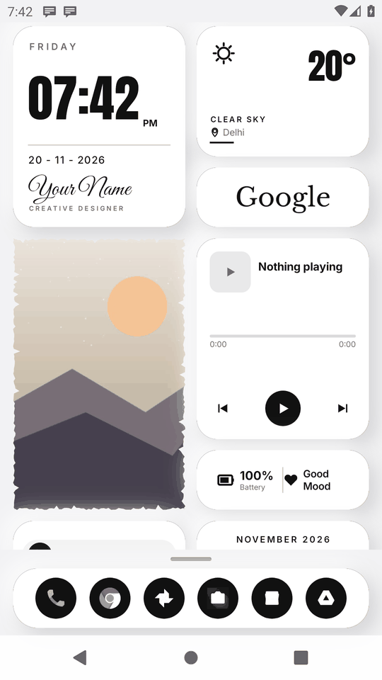
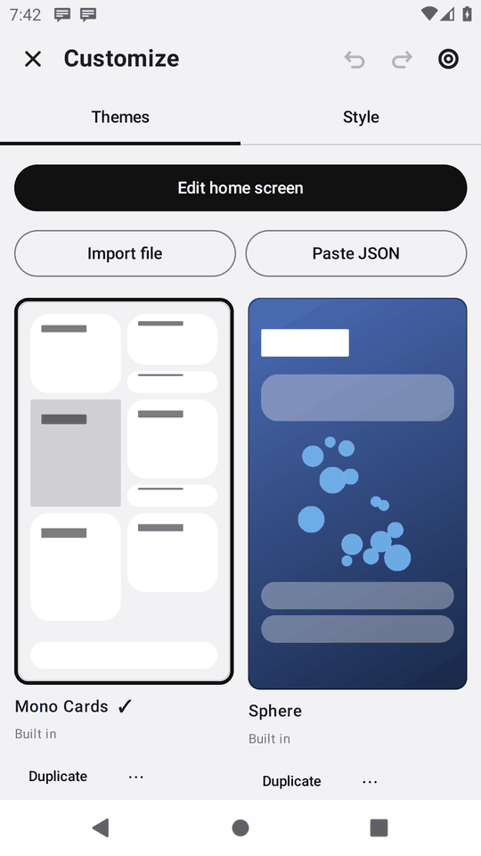
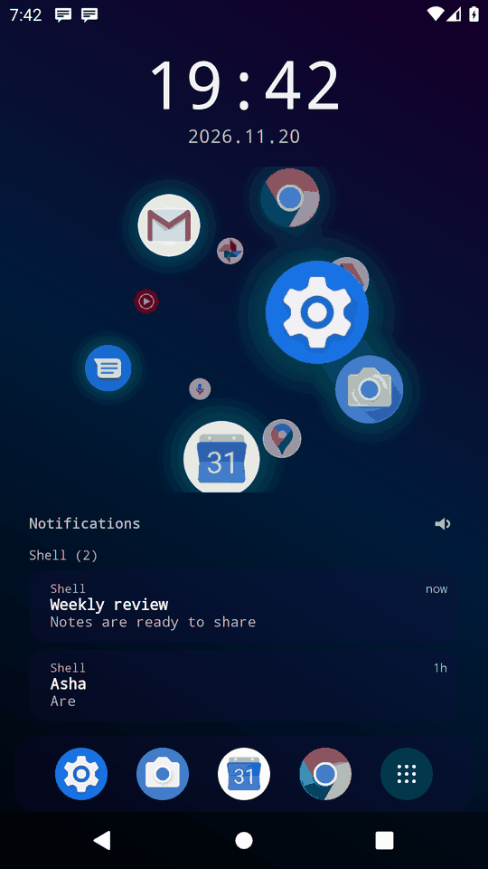
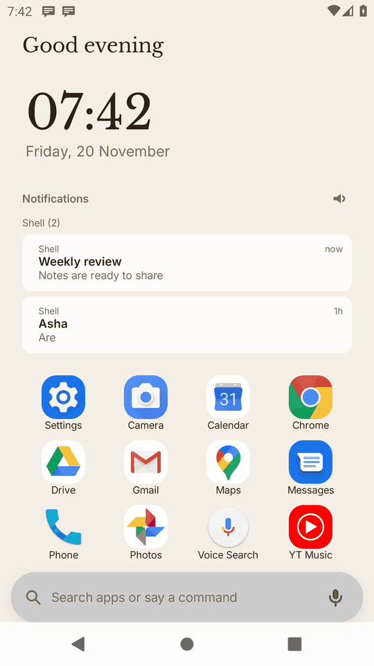
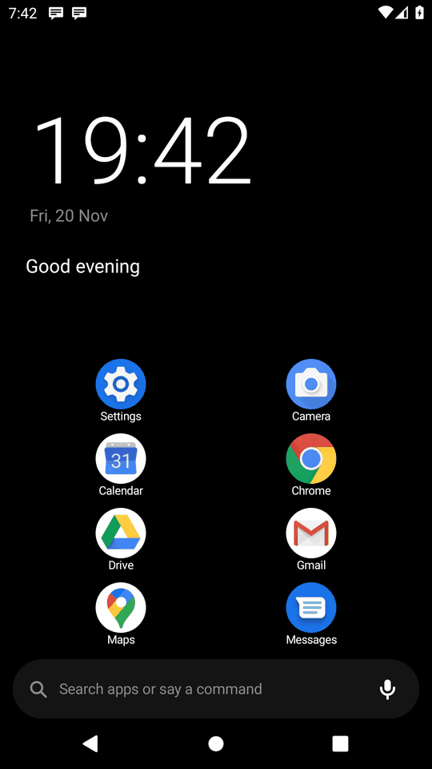
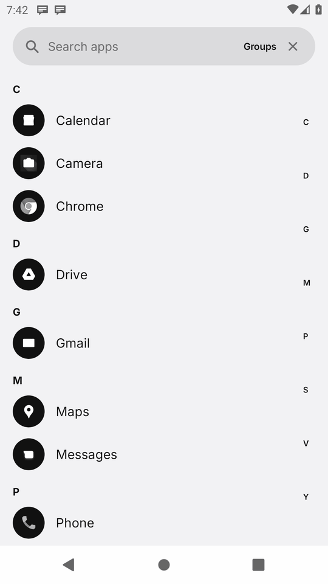
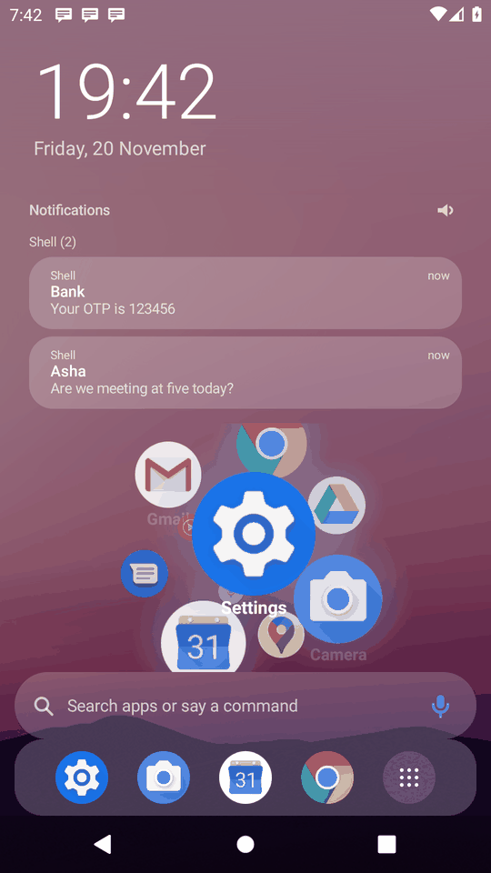

Your phone, your design.
PhoneSaar Launcher is a home screen you shape yourself: clean cards or a spinning sphere of your apps, your notifications where you want them, and a voice that understands हिन्दी and English. Everything stays on the phone.
Android 8.0 or newer. It is a normal app: you can switch back to your old home screen at any time.

What it does
Sphere by use
Your apps float on a 3D sphere. The ones you use most are biggest and in front. Drag to spin, tap to open, hold for app info, hide or pin.
Notifications your way
A feed grouped by app: tap to open, swipe to dismiss, reply in place, read aloud. Badges on your icons.
हिन्दी and English voice
Say "WhatsApp kholo", "torch on", "subah 6 baje alarm", "theme neon lagao" or "reply to WhatsApp saying okay". Typed in the search bar it works the same.
Design it yourself
Pick a theme, drag blocks around, change colours and fonts, or edit one text file and watch your phone update live.
Looks






Install
- On the phone, open this page in Chrome and tap Download launcher.
- Tap Open when it finishes. If asked, allow Install unknown apps for Chrome, then tap Install.
- Open PhoneSaar Launcher, choose your language, and look around before making it your Home app.
Make it your Home app
- In the launcher, tap Set as Home app (or Settings, Make PhoneSaar Launcher my Home app) and choose it in the box Android shows.
- On Xiaomi, Redmi and POCO (HyperOS or MIUI) the box can be missing: open Settings, Apps, Default apps, Home screen and pick PhoneSaar Launcher.
- Press the Home button. You are on your new home screen.
An honest note for HyperOS and MIUI
On some Xiaomi builds, full-screen gestures fall back to the three navigation buttons when a third-party launcher is the Home app. That is decided by the system, not by the launcher.
Going back to your old launcher
Open Settings, Apps, Default apps, Home screen (the launcher also has a Go back to my old launcher button in its settings) and pick your old one. Nothing is lost; uninstalling the launcher also works.
Design your own
Every look is one design.json: colours, fonts, corner radius, shadows, the blocks on the screen and where they sit. Edit it on your computer and the phone redraws in about a second; or change things on the phone itself and the same file is updated. Bad values never crash it: each one falls back and shows up in a small "design warnings" chip.
# one-time: make it the Home app and give it usage and notification access
tools/launcher-design.sh grant
tools/launcher-design.sh home
# edit my.json on your computer, save, and watch the phone follow
tools/launcher-design.sh watch my.json
tools/launcher-design.sh preset neon # switch built-in themes
tools/launcher-design.sh screenshot out.pngThe script needs only adb and Wireless or USB debugging. The full list of keys, with examples, is in DESIGN.md.
Privacy
- It works offline. The only thing that ever goes online is the weather card, and only if you turn it on: the city name you type (or your rounded, coarse location if you choose that) goes to Open-Meteo to get the temperature. You can switch the card off.
- Notification access lets the launcher show your notifications on the home screen and read them aloud. The content stays on the phone, is not stored and is never sent anywhere.
- Usage access lets the launcher count how often you open apps so the sphere can put them in order. The counts stay on the phone.
- Voice uses your phone's own speech recognizer, offline where your phone supports it. Photos are chosen with Android's Photo Picker, so the launcher never gets storage access.
- Contacts, calendar and location permissions are asked only when you use the feature that needs them.